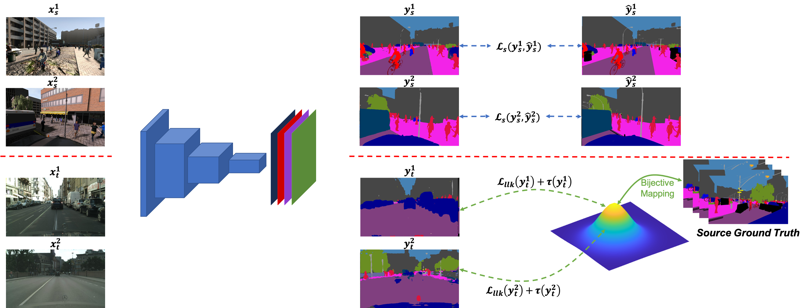
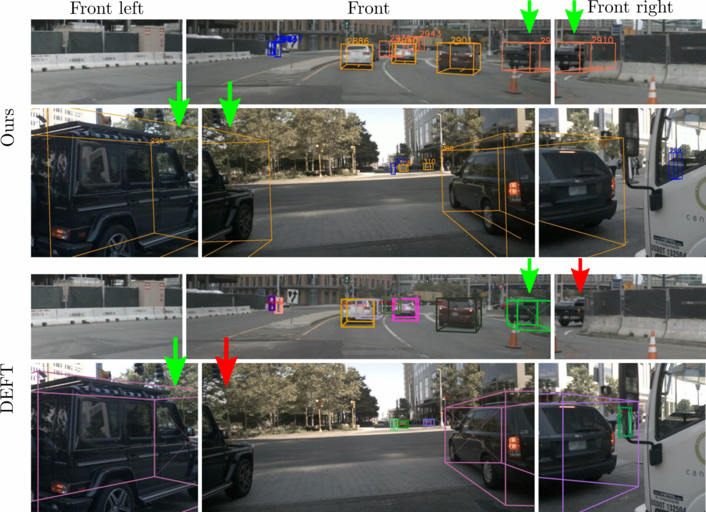

Our Solution
Our CVIU Lab focuses on four major technologies of autonomous driving:1. Unsupervised and Self-supervised Approach to Semantic Segmentation. We aim to build the perception model without using real-world labeled data.
2. Continuous Learning Approach to Semantic Segmentation. We aim to build a perception model that is able to continuously update the knowledge with respect to the deployment scenarios.
3. Robust Detection and Tracking. We aim to build a robust detection and tracking module that allows the vehicles can monitor their surrounding objects.
4. Driving Monitoring System. We aim to build a robust monitoring system to guarantee the safety of drivers by monitoring the drivers' behavior.

|
 |  |
Our Team

|

|

|
|
| Dr. Khoa Luu | Thanh Dat Truong | Pha Nguyen | Xuan Bac Nguyen |
| Assistant Professor | Ph.D. Candidate | Ph.D. Student | Ph.D. Student |
| khoaluu@uark.edu | tt032@uark.edu | panguyen@uark.edu | xnguyen@uark.edu |
Publication
[1] Thanh-Dat Truong, Ngan Le, Bhiksha Raj, Jackson Cothren, and Khoa Luu (2023). FREDOM: Fairness Domain Adaptation Approach to Semantic Scene Understanding. In Proceedings of the IEEE/CVF Conference on Computer Vision and Pattern Recognition (CVPR), 2023.
[2] Thanh-Dat Truong, Quoc-Huy Bui, Chi Nhan Duong, Han-Seok Seo, Son Lam Phung, Xin Li, and Khoa Luu (2022). DirecFormer: A Directed Attention in Transformer Approach to Robust Action Recognition. In Proceedings of the IEEE/CVF Conference on Computer Vision and Pattern Recognition (CVPR), 2022.
[3] Pha Nguyen Kha Gia Quach, Chi Nhan Duong, Ngan Le, Xuan-Bac Nguyen, Khoa Luu (2022). Multi-Camera Multiple 3D Object Tracking on the Move for Autonomous Vehicles. In Proceedings of the IEEE/CVF Conference on Computer Vision and Pattern Recognition Workshop (CVPRW), 2022.
[4] Pha Nguyen, Kha Gia Quach, Chi Nhan Duong, Son Lam Phung, Ngan Le, and Khoa Luu (2022). Multi-Camera Multi-Object Tracking on the Move via Single-Stage Global Association Approach. arXiv, 2022.
[5] Thanh-Dat Truong, Pierce Helton, Ahmed Moustafa, Jackson David Cothren, and Khoa Luu (2022). CONDA: Continual Unsupervised Domain Adaptation Learning in Visual Perception for Self-Driving Cars. arXiv, 2022.
[6] Thanh-Dat Truong, Chi Nhanh Duong, Pierce Helton, Ashley Dowling, Xin Li, and Khoa Luu (2022). CoMaL: Conditional Maximum Likelihood Approach to Self-supervised Domain Adaptation in Long-tail Semantic Segmentation. IEEE Transactions on Pattern Analysis and Machine Intelligence (Under Review).
[7] Kha Gia Quach, Huu Le, Pha Nguyen, Chi Nhan Duong, Tien Dai Bui, and Khoa Luu (2022). Depth Perspective-aware Multiple Object Tracking. arXiv, 2022.
[8] Thanh-Dat Truong, Chi Nhan Duong, Ngan Le, Son Lam Phung, Chase Rainwater, Khoa Luu (2021). BiMal: Bijective Maximum Likelihood Approach to Domain Adaptation in Semantic Scene Segmentation. Proceedings of the IEEE/CVF International Conference on Computer Vision (ICCV), 2021.
[9] Kha Gia Quach, Pha Nguyen, Huu Le, Thanh-Dat Truong, Chi Nhan Duong, Minh-Triet Tran, and Khoa Luu (2021). DyGLIP: A Dynamic Graph Model with Link Prediction for Accurate Multi-Camera Multiple Object Tracking. In Proceedings of the IEEE/CVF Conference on Computer Vision and Pattern Recognition (CVPR), 2021.
Sponsors

|